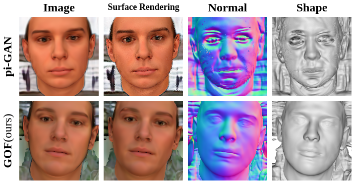
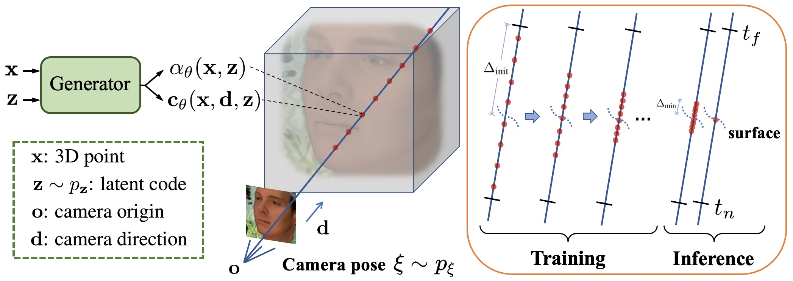
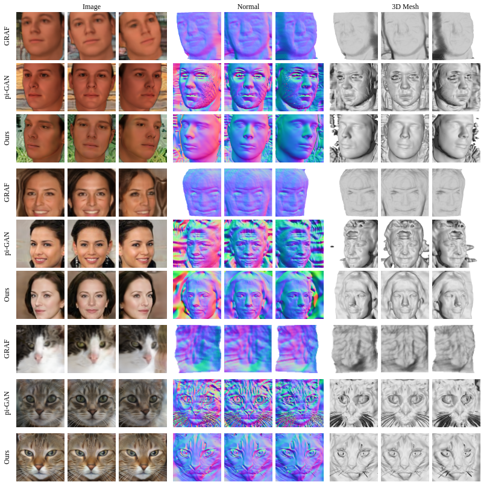

Generative Occupancy Fields for 3D Surface-Aware Image Synthesis

Abstract
The advent of generative radiance fields has significantly promoted the development of 3D-aware image synthesis. The cumulative rendering process in radiance fields makes training these generative models much easier since gradients are distributed over the entire volume, but leads to diffused object surfaces. In the meantime, compared to radiance fields occupancy representations could inherently ensure deterministic surfaces. However, if we directly apply occupancy representations to generative models, during training they will only receive sparse gradients located on object surfaces and eventually suffer from the convergence problem. In this paper, we propose Generative Occupancy Fields (GOF), a novel model based on generative radiance fields that can learn compact object surfaces without impeding its training convergence. The key insight of GOF is a dedicated transition from the cumulative rendering in radiance fields to rendering with only the surface points as the learned surface gets more and more accurate. In this way, GOF combines the merits of two representations in a unified framework. In practice, the training-time transition of start from radiance fields and march to occupancy representations is achieved in GOF by gradually shrinking the sampling region in its rendering process from the entire volume to a minimal neighboring region around the surface. Through comprehensive experiments on multiple datasets, we demonstrate that GOF can synthesize high-quality images with 3D consistency and simultaneously learn compact and smooth object surfaces.
Demo
Method Overview

Qualitative comparison

Materials
Code

Citation
@inproceedings{xu2021generative,
title={Generative Occupancy Fields for 3D Surface-Aware Image Synthesis},
author={Xu, Xudong and Pan, Xingang and Lin, Dahua and Dai, Bo},
booktitle={Advances in Neural Information Processing Systems(NeurIPS)},
year={2021}
}